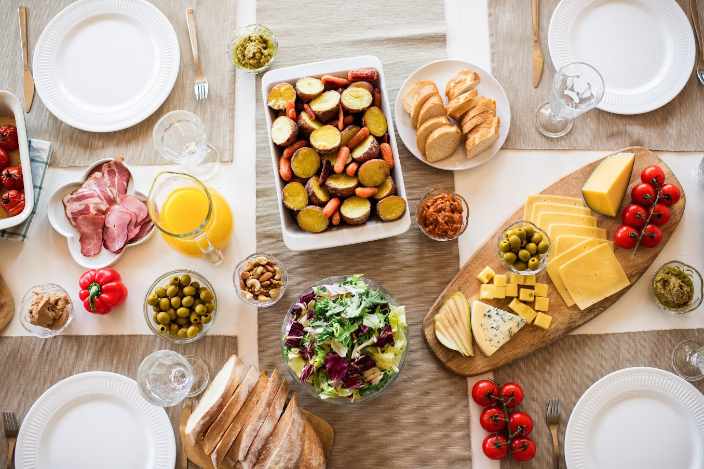
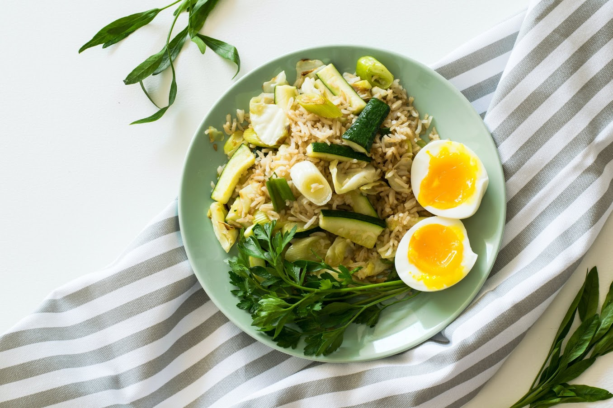
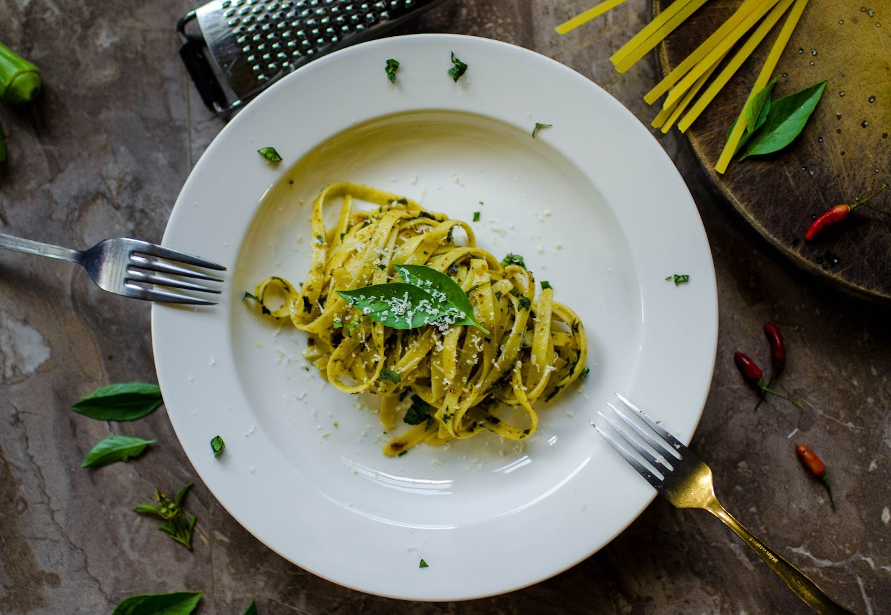
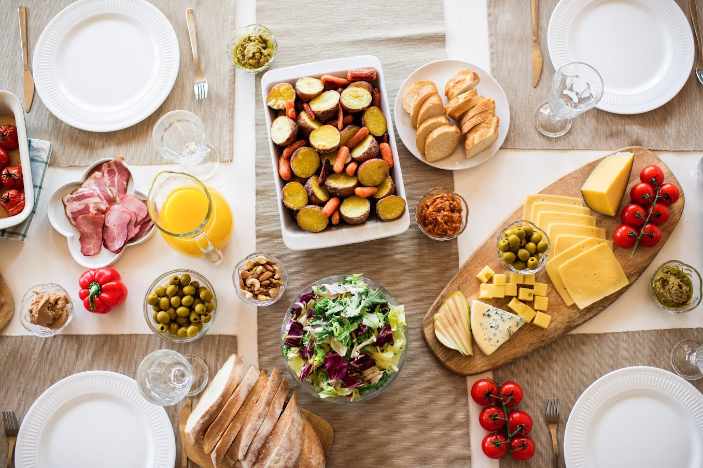
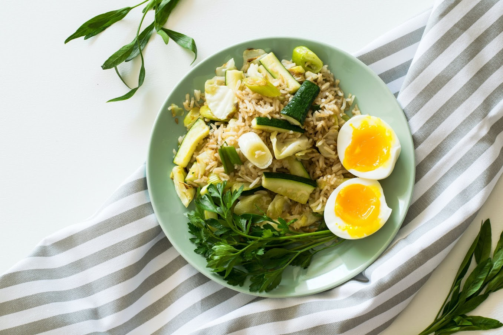
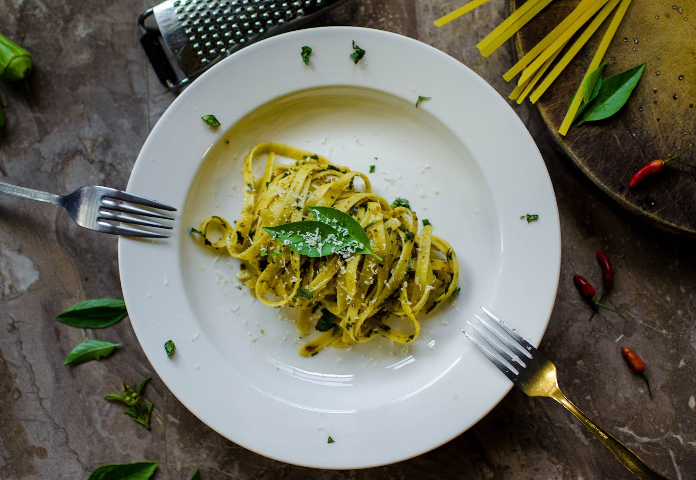

YUMMY
FOODS
Welcome to Yummy Foods
Food is any substance consumed by an organism for nutritional support. Food is usually of plant, animal, or fungal origin and contains essential nutrients such as carbohydrates, fats, proteins, vitamins, or mineral.


Awesome Taste
Awesome Ingredients
The substance is ingested by an organism and assimilated by the organism's cells to provide energy, maintain life, or stimulate growth. Different species of animals have different feeding behaviours that satisfy the needs of their metabolisms and have evolved to fill a specific ecological niche within specific geographical contexts.
Burger Collection Bonanza
Burger is a food consisting of fillings—usually a patty of ground meat, typically beef—placed inside a sliced bun or bread roll. Hamburgers are often served with cheese, lettuce, tomato, onion, pickles, bacon, or chilis; condiments such as ketchup, mustard, mayonnaise, relish, or a "special sauce", often a variation of Thousand Island dressing; and are frequently placed on sesame seed buns.

Burger One
Burger Two
Burger Three
Burger Four
A hamburger, or simply burger, is a food consisting of fillings—usually a patty of ground meat, typically beef—placed inside a sliced bun or bread roll. Hamburgers are often served with cheese, lettuce and etc..
Fire and Ice with Our Fries
French fries are served hot, either soft or crispy, and are generally eaten as part of lunch or dinner or by themselves as a snack, and they commonly appear on the menus of diners, fast food restaurants, pubs, and bars. They are often salted and may be served with ketchup, vinegar, mayonnaise, tomato sauce, or other local specialities.
Fries One
Fries Two
Fries Three
Fries Four
Fries can be topped more heavily, as in the dishes of poutine, loaded fries or chili cheese fries. French fries can be made from sweet potatoes instead of potatoes. A baked variant, oven fries, uses less or no oil.
Eat Healthy and stay Healthy
A healthy diet is a diet that maintains or improves overall health. A healthy diet provides the body with essential nutrition: fluid, macronutrients such as protein, micronutrients such as vitamins, and adequate fibre and food energy.
A healthy diet may contain fruits, vegetables, and whole grains, and may include little to no ultra-processed foods or sweetened beverages.

Healthy One
Healthy Two
Healthy Three
Healthy Four
Some healthy foods including beans, grains, cauliflower, cantaloupe, pasta, bread, orange, turkey, fish, carrots, turnips, zucchini, snowpeas, string beans, radishes, asparagus, summer squash, lean beef, tomatoes, and potatoes
Do Google and Eat Noodles
Noodles are a type of food made from unleavened dough which is either rolled flat and cut, stretched, or extruded, into long strips or strings. Noodles are a staple food in many cultures.

Noodle One
Noodle Two
Noodle Three
Noodle Four
Noodles can contribute to your intake of essential vitamins and minerals, depending on the type and preparation.
Enjoy the Deserts
Dessert consist of variations of tastes, textures, and appearances. Desserts can be defined as a usually sweeter course that concludes a meal. This definition includes a range of courses ranging from fruits or dried nuts to multi-ingredient cakes and pies.
Desert One
Desert Two
Desert Three
Desert Four
This is a list of Indian sweets and desserts, also called mithai, a significant element in Indian cuisine. Indians are known for their unique taste and experimental behavior when it comes to food. Many Indian desserts are fried foods made with sugar, milk or condensed milk.
Copyright © 2024 Yummy Foods
All Rights Reserved
Developed and Maintained By
Afsar Bhanu
Welcome to Yummy Foods
Food is any substance consumed by an organism for nutritional support. Food is usually of plant, animal, or fungal origin and contains essential nutrients such as carbohydrates, fats, proteins, vitamins, or mineral.
|
|
 |
| Awesome Taste | Awesome Ingredients |
The substance is ingested by an organism and assimilated by the organism's cells to provide energy, maintain life, or stimulate growth. Different species of animals have different feeding behaviours that satisfy the needs of their metabolisms and have evolved to fill a specific ecological niche within specific geographical contexts.
Burger Collection Bonanza
Burger is a food consisting of fillings—usually a patty of ground meat, typically beef—placed inside a sliced bun or bread roll. Hamburgers are often served with cheese, lettuce, tomato, onion, pickles, bacon, or chilis; condiments such as ketchup, mustard, mayonnaise, relish, or a "special sauce", often a variation of Thousand Island dressing; and are frequently placed on sesame seed buns.
|
|
|||
| Burger One | Burger Two | Burger Three | Burger Four |
A hamburger, or simply burger, is a food consisting of fillings—usually a patty of ground meat, typically beef—placed inside a sliced bun or bread roll. Hamburgers are often served with cheese, lettuce and etc..
Fire and Ice with Our Fries
French fries are served hot, either soft or crispy, and are generally eaten as part of lunch or dinner or by themselves as a snack, and they commonly appear on the menus of diners, fast food restaurants, pubs, and bars. They are often salted and may be served with ketchup, vinegar, mayonnaise, tomato sauce, or other local specialities.
| Fries One | Fries Two | Fries Three | Fries Four |
Fries can be topped more heavily, as in the dishes of poutine, loaded fries or chili cheese fries. French fries can be made from sweet potatoes instead of potatoes. A baked variant, oven fries, uses less or no oil.
Eat Healthy and stay Healthy
A healthy diet is a diet that maintains or improves overall health. A healthy diet provides the body with essential nutrition: fluid, macronutrients such as protein, micronutrients such as vitamins, and adequate fibre and food energy. A healthy diet may contain fruits, vegetables, and whole grains, and may include little to no ultra-processed foods or sweetened beverages.
|  | |||
| Healthy One | Healthy Two | Healthy Three | Healthy Four |
Some healthy foods including beans, grains, cauliflower, cantaloupe, pasta, bread, orange, turkey, fish, carrots, turnips, zucchini, snowpeas, string beans, radishes, asparagus, summer squash, lean beef, tomatoes, and potatoes
Do Google and Eat Noodles
Noodles are a type of food made from unleavened dough which is either rolled flat and cut, stretched, or extruded, into long strips or strings. Noodles are a staple food in many cultures.
|  | |||
| Noodle One | Noodle Two | Noodle Three | Noodle Four |
Noodles can contribute to your intake of essential vitamins and minerals, depending on the type and preparation.
Enjoy the Deserts
Dessert consist of variations of tastes, textures, and appearances. Desserts can be defined as a usually sweeter course that concludes a meal. This definition includes a range of courses ranging from fruits or dried nuts to multi-ingredient cakes and pies.
| Desert One | Desert Two | Desert Three | Desert Four |
This is a list of Indian sweets and desserts, also called mithai, a significant element in Indian cuisine. Indians are known for their unique taste and experimental behavior when it comes to food. Many Indian desserts are fried foods made with sugar, milk or condensed milk.
Copyright © 2024 Yummy Foods
All Rights Reserved
Developed and Maintained By Afsar Bhanu